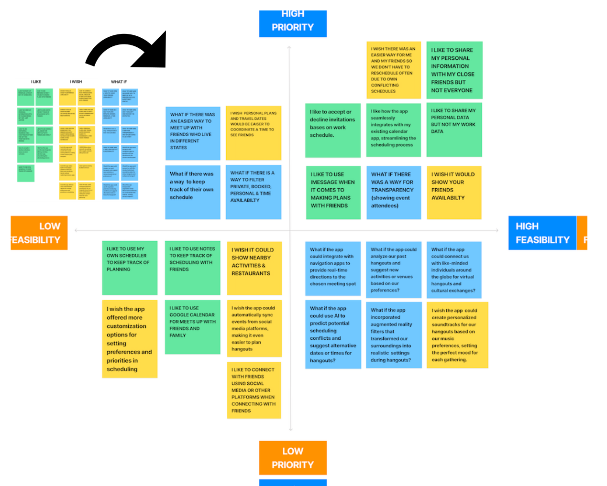
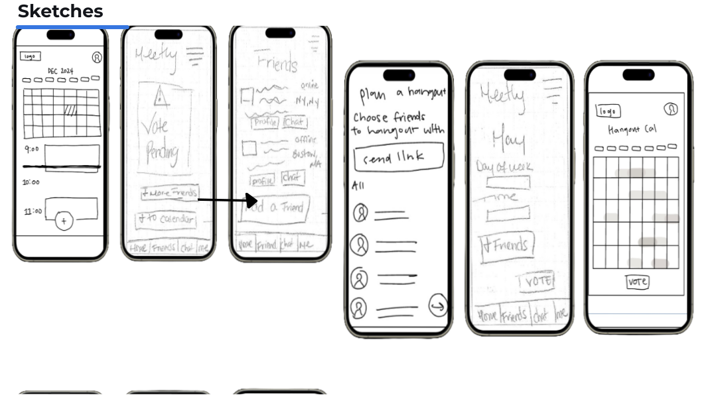

Responsibility
- Role 1: Figma, Adobe Photoshop
- Role 2: Google slides
- Role 3: Google
-
Pain Point 1
Ensuring everyone is aware of timing: Keeping everyone informed about the timing of events and meetings can be cumbersome, leading to confusion and missed appointments.
-
Pain Point 2
Conflicting schedules and commitments: Users cited conflicting work schedules, personal commitments, and family responsibilities as major obstacles to arranging hangouts, making it difficult to find mutually convenient times to meet.
-
Pain Point 3
Reliance on multiple communication channels for planning: Depending on various communication channels like messaging apps, emails, and phone calls for planning can lead to fragmented communication and misunderstandings.
Mobile App Prototype
UX Case Study
Duration:
3 weeks
Product Overview
Our organization, Meetly Inc. is developing a mobile application called Meetly to help friends and social groups better coordinate their meetups and share schedules effortlessly.
Problem Statement
Scheduling meetups with friends can be a hassle due to busy schedules and conflicting availabilities, leading to missed opportunities and disappointment.
Goals
Meetly streamlines the scheduling process with intuitive tools and voting options, making organizing meetups both efficient and enjoyable. Its user-friendly interface allows participants to easily input their availability and preferences, promoting inclusive decision-making. Automated reminders boost attendance, while seamless integration with popular calendar apps ensures accessibility and smooth workflow integration. With Meetly, coordinating gatherings becomes effortless, enhancing collaboration and reducing scheduling hassles.
Design Process
In this research project, we conducted five interviews with potential users aged 25-35 across four states: Florida, Illinois, North Carolina, and New York. The insights revealed that busy work schedules and complex planning contribute to failed yet anticipated hangouts. Users in this demographic expressed frustration and highlighted the need for a dedicated hangout app to address these challenges and ensure memorable experiences. We used an affinity diagram to analyze their pain points and synthesized the findings into a user persona.

Design Timeline

User Insights
User Persona

Ideation
Story Board

Sketches
Digital Wireframe

Usability Testing Plan
The goal of this usability test is to assess the effectiveness and user experience of Meetly's features, with a specific focus on conducting tasks such as scheduling a hangout, adding friends, voting, and integrating with calendars, we aim to understand how seamlessly users can navigate the app and accomplish these tasks. Through this evaluation, we hope to identify any usability issues or areas for improvement to ensure that Meetly provides a smooth and enjoyable experience for users.Task 1 : Schedule a Hangout | Task 2 : Add Friends | Task 3: Vote and add to Calendar

Iteration: Voting Screen

High Fidelity Screens